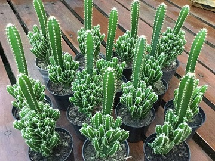
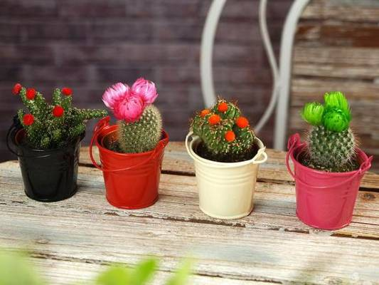
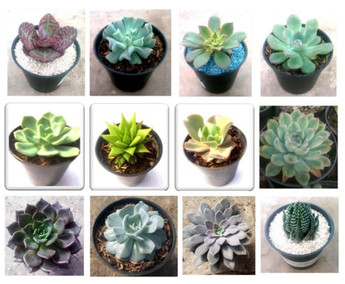

KAKTUS

Marc 23, 2020Views : 5,487
Kaktus merupakan tumbuhan yang termasuk dalam famili Cactaceae. Kaktus memiliki lebih dari 2000 varietas dengan berbagai warna dan bentuk.
Habitat alami kaktus adalah di gurun atau padang pasir.Karakteristik tanaman kaktus ialah kaktus memiliki daun yang berbentuk duri
untuk mengurangi penguapan, memiliki batang berlapis lilin untuk mempertahankan kadar air.
Akar yang dimiliki kaktus sangat panjang dan menyebar luas ke dalam tanah, akar yang panjang tersebut berfungsi untuk lebih bisa menjangkau dan mengambil air dan
unsur hara yang terdapat di dalam tanah.
Watch This
KAKTUS HIAS

Marc 23, 2020Views : 5,487
Kaktus Hias merupakan tanaman kering yang digunakan untuk tanaman hias pekarangan rumah. Tanaman kaktus hias secara umum berukuran mini biasa ditanam pada media pot.
Selain untuk hiasan rumah, tanaman kaktus hias berukuran mini saat ini banyak diperjual belikan untuk kado dan souvenir acara-acara pernikahan.
Kaktus mini ini biasa ditaruh pada meja ruang tamu rumah sebagai pelengkap hiasan dekorasi ruang tamu, meja kerja, kamar, dll.
Tanaman kaktus hias memiliki jenis yang beragam, dan setiap jenisnya memiliki keindahan dan keunikan masing-masing dari segi bentuk dan warna bunganya.
Watch This

SUKULEN
Marc 23, 2020Views : 5,487
Sukulen merupakan istilah untuk tumbuhan yang mempunyai karakter menyerap dan menyimpan air pada batang utamanya. Secara fisik sukulen memiliki kelopak seperti daun,
Sementara, kaktus mengganti jaringan daun dalam bentuk duri.
Jadi semua kaktus adalah tanaman sukulen. Namun tidak semua sukulen adalah kaktus.
Watch This